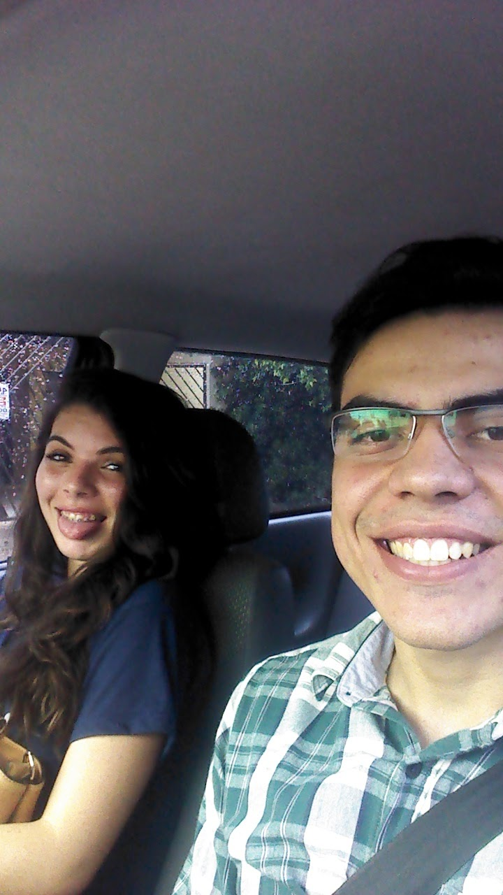
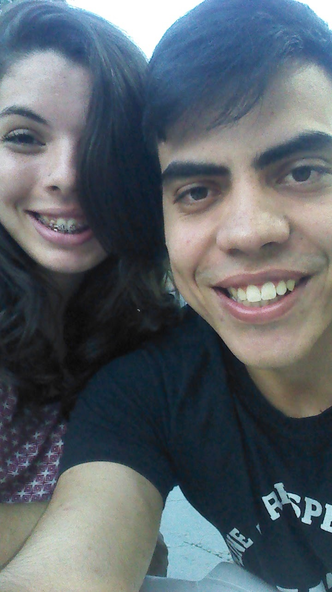

Nossa Jornada
O Início: Digix e o Primeiro Olhar
Nossa história começou a se entrelaçar na empresa Digix, em 2015. O ambiente de trabalho se tornou o palco para os primeiros olhares e as primeiras conversas, que aos poucos transformariam colegas em algo muito mais profundo. Era o prelúdio de uma conexão que só cresceria.
Foi em 2016 que demos o primeiro grande passo e oficializamos nosso namoro. Ali, a amizade e a admiração mútua floresceram em um compromisso, marcando o início da nossa jornada como casal.



O Grande Pedido: Um "Sim" para Sempre
O tempo voou, e o amor só se aprofundou. No dia 15 de dezembro de 2017, em um momento que ficará para sempre gravado em nossa memória, fiz a pergunta mais importante da minha vida. Aquele "sim" selou a promessa de um futuro juntos, de construir uma família e compartilhar cada novo capítulo.

O Grande Dia: Um Novo Capítulo
E então, o dia tão esperado chegou! Em 26 de janeiro de 2019, celebramos nossa união em casamento. Foi um dia mágico, repleto de alegria, emoção e a certeza de que estávamos começando o melhor capítulo de nossas vidas. Desde então, cada dia é uma nova página escrita a dois, com amor, parceria e muita cumplicidade.

E a nossa história continua sendo construída, a cada segundo, com muito amor.